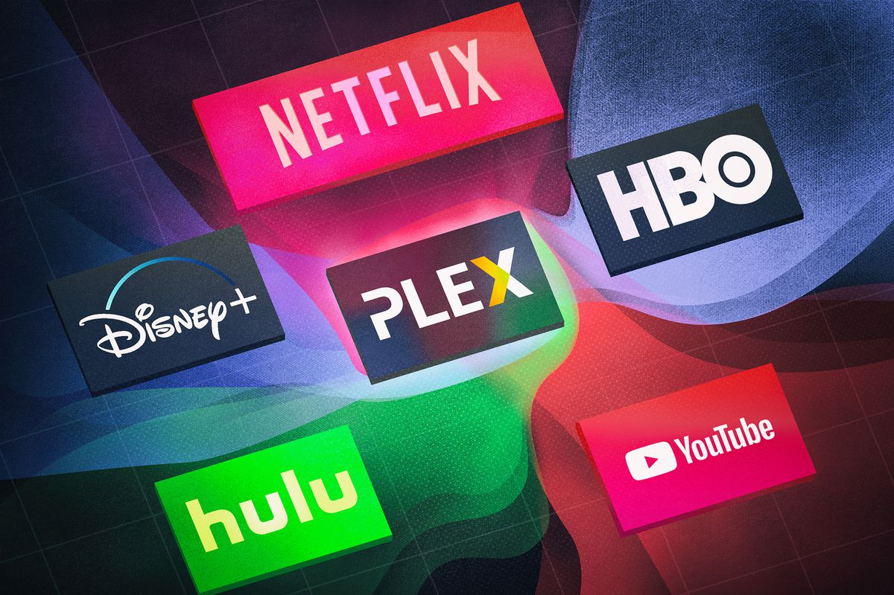

About Streaming
What is streaming? Streaming refers to any media content – live or recorded – delivered to computers and mobile devices via the internet and played back in real time. Podcasts, webcasts, movies, TV shows and music videos are common forms of streaming content.
